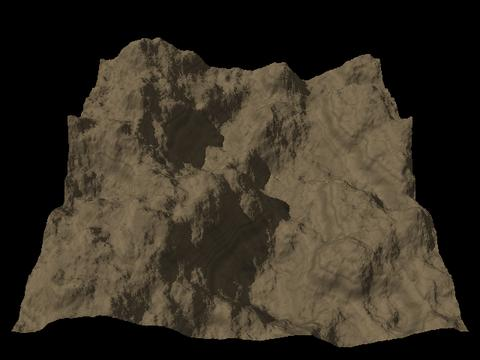
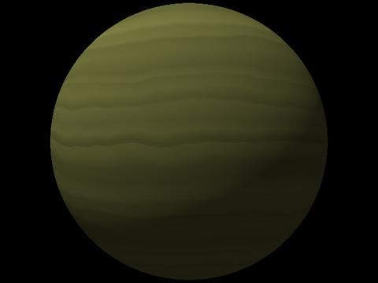

|
|
| Version 0.40 and later - geomorph.inc may be used instead of maprock1.inc, geomorph_txtr.inc and slope_patterns.inc. This file includes the 3 others. - When geomorph.inc is used, all png "test.png" commands in this page should be replaced by png main_terrain |
| maprock1.inc |
Provides a colour map, generally
used with a gradient pattern for simulating sedimentary rock. It can
also be used to simulate clouds bands on a giant planet. The user may
change the basic coulour, so that the bands represent only a density
variation on that colour. You can generate your own map with the "colmap" program (explained later). |
| geomorph_txtr.inc |
Provides sand, grass and granite
textures. Contains the "wet granite" texture used
in the "cracks"
tutorial. |
| slope_patterns.inc |
Provides rock, forest, snow and
bushes textures, with a slope component. The snow appears at higher
altitudes, and the forest, the bushes or the snow disappear in favour
of bare rock when the slope is too steep. |
| painted_desert_map1.inc painted_desert_map2.inc painted_desert_map3.inc |
These files define pastel
reddish colour maps under the name ground_map,
for use as gradients
simulating the colours of the Painted Desert, in Arizona. These are
actual colours, sampled on Kodachrome slides taken 2-3 hours after the
sunrise. The col_density
variable can be used to adjust the overall density of the colours. |
| Use |
Result |
| Basic: #declare rock_color=<0.55,0.45,0.3>; // Mandatory #include "maprock1.inc" ... height_field { png "test.png"
}smooth texture {pigment {gradient y color_map{rock_map} scale 0.5} } scale < 1.0, 0.3, 1.0 > translate <-.5, 0.0, -.5> Here we scale the texture to 0.5, which means the bands are repeated once (2 cycles), otherwise they are difficult to see. |
 |
| Basic, for the sphere: #declare rock_color=<0.55,0.45,0.3> ; #include "maprock1.inc" ... sphere { <0,0,0> 1 texture
{pigment {gradient y color_map{rock_map}} }
}See how the texture is repeated. There is a neat border at the equator. If you want the full gradient without repetition, translate it by 50% and stretch the gradient on the y axis by 200%: texture {pigment {gradient y color_map{rock_map}} translate 0.5 scale 2 } |
 |
| Add turbulence, use another
colour: #declare rock_color=<0.5,0.5,0.2> ; #include "maprock1.inc" ... sphere { <0,0,0> 1 texture {
}pigment {gradient y color_map{rock_map} warp {turbulence 0.1} } // end of pigment } |
 |
| Here the gradient is reused as a
normal. We #declare the pigment in a variable to make easier to reuse
it: #declare strata = pigment {gradient y color_map{rock_map} warp {turbulence 0.1}} sphere { <0,0,0> 1 texture {
}pigment { strata } normal { pigment_pattern {strata} 1.5 } // 1.5 is the bump size } |
|
| Now we reuse the pigment as a
normal on a terrain, to emphasize the sedimentary layers: #declare rock_color=<0.55,0.45,0.3> ; #include "maprock1.inc" ... #declare strata = pigment {gradient y color_map{rock_map} warp {turbulence 0.1}} height_field { png "test.png"
}smooth texture {pigment {strata} normal {pigment_pattern{strata} 1.0} scale 0.3} scale < 1.0, 0.3, 1.0 > translate <-.5, 0.0, -.5> A bump size of 1.5, like the one used for the sphere, was a bit too strong. |
 |
| The colour map can also be used
with other patterns than a gradient. ... #declare strata = pigment{granite color_map {rock_map} } sphere { <0,0,0> 1 texture
{pigment
{strata} normal{pigment_pattern{strata} 1.0 }}
} |
| Texture
and use |
Result |
| sand1:
Desert or sea bottom sand with a wavy normal; better used
on a ground plane or on a smooth terrain. Here the terrain has been
smoothed with a radius of 30, then
the contrast has been decreased at a level of -35. #declare sand_color=<0.75,0.55,0.35>; // Optional; if non existent, this colour is the default #include "geomorph_txtr.inc" ... #declare hf= height_field { png "test.png" smooth scale < 1.0, 0.3, 1.0 > translate <-.5, 0.0, -.5> } ... object {hf texture {sand1 scale 0.01 rotate y*45} } Notice how the texture is scaled down to show the waves. |
|
| shore_granite:
A complex texture used for the cracks
tutorial. The bottom simulates wet granite. At the waves level, there
are algae, going from yellow to green. At the top, there can be some
grass, depending on the texture scale. #declare granite_density=1.5; // Optional. Declare only if you want a value different than 1.2 (ex. 1.5 for a lighter texture, 1.0 for a darker one). #declare granite_ambient_finish = 0.0; // Optional. Increase to get smoother shadows. Default is 0.2. #include "geomorph_txtr.inc" ... #declare hf=... // See the preceding example ... object {hf texture {shore_granite} } |
|
| granite_1:
A granite simulating cracks with a normal. Density can
be specified. Notice the variable name: granite1_density instead of granite_density. The
512x512 terrain has been smoothed with a radius of
30 pixels. #declare granite1_density=1.0; // Optional; default is 1.0 #declare granite1_grain_scale=1.0; // Optional; default is 1.0; use value > 2 to see a real difference #include "geomorph_txtr.inc" ... #declare hf=... ... object {hf texture {granite_1 scale 0.5} } |
 |
| granite_2:
A component of the shore_granite
texture. With a large scale, it gives a non-grainy bumpy rock.
Density can be specified with the granite_density
variable. #declare granite_density=1.5; // Optional; default is 1.5 #include "geomorph_txtr.inc" ... #declare hf=... ... object {hf texture {granite_2 scale 0.5} } |
|
| granite_2:
Now with a small scale. #declare granite_density=1.5; // Optional; default is 1.5 #include "geomorph_txtr.inc" ... #declare hf=... ... object {hf texture {granite_2 scale 0.02} } |
 |
| t_grass:
A grassy texture composed of the p_grass
pigment reused as a normal. #declare grass_density=1.0; // Optional; default is 1.0 #declare grass_scale=1.0; // Optional; default is 1.0; you can specify it directly in the texture #include "geomorph_txtr.inc" ... #declare hf=... ... object {hf texture {t_grass scale 0.5} } Or: object {hf texture {pigment {p_grass} normal {pigment_pattern{p_grass} 1.0} scale 0.5} } |
 |
| 1.
forest A dark texture made with bumps which look like trees from far away. The colour is sampled from a picture of the Québec boreal black spruce forest, so you'll probably want to increase its brightness to reproduce deciduous tree. A sharper look can be produced by setting the optional UseGranite variable to 1 (right side of the image). #declare forest_color_density=1.2; // Optional. Default value is 1.0, which is adequate in a gradient, but looks too dark when the texture is used alone as here // Increase further more for simulating deciduous trees #declare forest_normal=1.0; // Optional. Increase to emphasize the bumps, decrease to smooth them #declare forest_normal_scale=1.0; // Optional. Relative size of the bumps. #declare UseGranite=0 ; // Set to 1.0 for using a granite pattern instead of bumps, for a "sharper" look #include "slope_patterns.inc" ... #declare hf= height_field { png "test.png" smooth scale < 1.0, 0.3, 1.0 > translate <-.5, 0.0, -.5> } ... object {hf texture {forest}} // You'll probably want to scale up or down the texture, depending on the terrain (ex. {forest scale 1.5}, or use the forest_normal_scale variable) |
 |
| 2.
bushes When altitude or slope increases, the trees become sparse. They are replaced with bushes, which often look lighter than trees. UseGranite also works for this texture. #declare bushes_color_density=1.2; // Optional. Default value is inherited from forest_color_density. #declare bushes_normal=1.0; // Optional. Bumps strength. #declare UseGranite=0 ; #include "slope_patterns.inc" ... #declare hf=... // Same as above ... object {hf texture {bushes}} |
 |
| 3.
snow A standard snow texture, with slight bumps. Hint: try to scale up the bumps to see the difference. The default scaling is suitable for a distant point of view, typical of mountain landscapes, so the bumps look somewhat grainy. #declare snow_density=0.8; // Optional. Default value is 1.0. When there are no haze or clouds, with a value of 1.0, the highlights seem "burned" #declare snow_color=<0.95,0.95,1.0>; // Optional. The default value is shown - a blueish white. #include "slope_patterns.inc" ... #declare hf=... // Same as above ... object {hf texture {snow}} |
|
| 4.
gradient_rock_snow This texture gives a rocky terrain with snow on top, independently of slope. The rock colour, normal, scale and turbulence, and the snow colour, density and height can be controlled. All variables are optional. Hint: if you don't want the sedimentary bands, scale the rock pigment (rock_pigment_scale) with a high value like 10. Increase the rock_normal to 1.5 or 2 to emphasize the graininess of the rock. The left side of the image presents the result when using the default parameters, the right side presents the result when the sedimentary bands are scaled up by 10, so that they don't show, and the graniness is increased by scaling up rock_normal to 1.5. // Snow control #declare snow_density=1.0; #declare snow_color=<0.95, 0.95, 1.0>; #declare snow_height=0.5; // Relative height of the snow top. Default value is 0.5. // Rock control #declare rock_normal=1.0; // Bands and grain strength #declare rock_color=<0.7,0.6,0.3>; #declare rock_scale=1.0; // Global scale #declare rock_pigment_scale=1.0; // Use to scale only the bands, without the grain #include "slope_patterns.inc" ... #declare hf=... // Same as above ... object {hf texture {gradient_rock_snow}} |
|
| 5.
gradient_forest_snow An other simple gradient, with forest and snow separated by a smooth layer of bushes. All the parameters already seen for forest and snow can be controlled. // Snow control #declare snow_density=1.0; #declare snow_color=<0.95, 0.95, 1.0>; #declare snow_height=0.5; // Forest control declare forest_color_density=1.0; #declare forest_normal=1.0; #declare forest_normal_scale=1.0; // Bushes control #declare bushes_color_density=1.0; #declare bushes_normal=1.0; #declare bushes_normal_scale=1.0; #declare UseGranite=0 ; #include "slope_patterns.inc" ... #declare hf=... // Same as above ... object {hf texture {gradient_forest_snow}} |
|
| 6.
gradient_forest_bushes Gradient (5) variant, without snow. Here the bushes colour density has been increased to 1.1 and the forest colour density decreased to 0.9, to emphasize the contrast between the two layers. The UseGranite variable can also be used for this texture, to replace the bumps pattern by the "sharper" granite one. Hint: to increase the height were the bushes begin, scale up the texture (as shown). To decrease the height, scale up the texture and translate it down on the Y axis. In the last case, the scaling is required to avoid a "cycle" - when the bushes layer is repeated at the foot of a mountain, or the forest layer at the top. Scaling up the texture also scales up the normal (the forest and bushes grain). To get a constant grain, scale down the <...>_normal_scale variables by the same ratio, as shown. // Forest control declare forest_color_density=0.9; #declare forest_normal=1.0; #declare forest_normal_scale=1.0/1.5; // Bushes control #declare bushes_color_density=1.1; #declare bushes_normal=1.0; #declare bushes_normal_scale=1.0/1.5; #declare UseGranite=0; #include "slope_patterns.inc" ... #declare hf=... // Same as above ... object {hf texture {gradient_forest_bushes scale 1.5}} |
|
| 7.
slope_snow_rock Our first slope dependent texture. The steepest parts show bare rock, other parts are covered with snow. The adhesion parameter controls the snow coverage (0.0 -> no snow; 1.0 -> snow everywhere). // Snow control #declare snow_density=1.0; #declare snow_color=<0.95, 0.95, 1.0>; // Rock control #declare rock_normal=1.0;/ / Bands and grain strength #declare rock_color=<0.7,0.6,0.3>; #declare rock_scale=1.0; // Global scale #declare rock_pigment_scale=1.0; // Use to scale only the bands, without the grain // Snow adhesion or "stickiness" #declare adhesion=0.6; // The default value is 0.5 #include "slope_patterns.inc" .. #declare hf=... ... object {hf texture {slope_snow_rock}} |
|
| 8.
slope_forest_rock Same concept as slope_snow_rock, with bushes and forest instead of snow. The adhesion variable is used in the same way. Usually, the trees don't grow on the steepest slopes of mountains. They are progressively replaced by bushes or grass, which are replaced with bare rock when the slope increases. So, the adhesion of the forest component is less than the adhesion of the bushes component, even if both are controlled with the same variable. // Rock control #declare rock_normal=1.0; / / Bands and grain strength #declare rock_color=<0.7,0.6,0.3>; #declare rock_scale=1.0; // Global scale #declare rock_pigment_scale=1.0; // Use to scale only the bands, without the grain // Bushes control #declare bushes_color_density=1.0; #declare bushes_normal=1.0; // Bushes / forest adhesion or "stickiness" #declare adhesion=0.5; // The default value is 0.5 #declare UseGranite=0; #include "slope_patterns.inc" .. #declare hf=... ... object {hf texture {slope_forest_rock}} |
|
| 9.
slope_rock_bushes This texture, very similar to slope_snow_rock, features only bushes on rock, depending on the slope. // Bushes control #declare bushes_color_density=1.0; #declare bushes_normal=1.0; // Bushes adhesion or "stickiness" #declare adhesion=0.5; // The default value is 0.5 #declare UseGranite=0; #include "slope_patterns.inc" .. #declare hf=... ... object {hf texture {slope_rock_bushes}} |
 |
| 10.
rock_top_snow This texture depends on both the altitude and on the slope. It combines (4) gradient_rock_snow and (7) slope_rock_snow. // Snow control #declare snow_density=1.0; #declare snow_color=<0.95, 0.95, 1.0>; #declare snow_height=0.4; // Rock control #declare rock_normal=1.0;/ / Bands and grain strength #declare rock_color=<0.7,0.6,0.3>; #declare rock_scale=1.0; // Global scale #declare rock_pigment_scale=1.0; // Use to scale only the bands, without the grain // Snow adhesion or "stickiness" #declare adhesion=0.5; // The default value is 0.5 #include "slope_patterns.inc" .. #declare hf=... ... object {hf texture {rock_top_snow}} |
 |
| 11.
forest_rock_snow This texture adds a snow gradient to (8) slope_forest_rock. The snow depends only on the altitude, not on the slope. // Snow control #declare snow_density=1.0; #declare snow_color=<0.95, 0.95, 1.0>; #declare snow_height=0.5; // Rock control #declare rock_normal=1.0;/ / Bands and grain strength #declare rock_color=<0.7,0.6,0.3>; #declare rock_scale=1.0; // Global scale #declare rock_pigment_scale=1.0; // Use to scale only the bands, without the grain // Snow / bushes / forest adhesion or "stickiness" #declare adhesion=0.7; // The default value is 0.5 #declare UseGranite=0; #include "slope_patterns.inc" .. #declare hf=... ... object {hf texture {forest_rock_snow}} |
 |
| 12.
forest_rock_snow_bushes This is the (11) forest_rock_snow texture, with a slope component for the snow. // Snow control #declare snow_density=1.0; #declare snow_color=<0.95, 0.95, 1.0>; #declare snow_height=0.5; // Rock control #declare rock_normal=1.0;/ / Bands and grain strength #declare rock_color=<0.7,0.6,0.3>; #declare rock_scale=1.0; // Global scale #declare rock_pigment_scale=1.0; // Use to scale only the bands, without the grain // Snow / bushes / forest adhesion or "stickiness" #declare adhesion=0.7; // The default value is 0.5 #declare UseGranite=0; #include "slope_patterns.inc" .. #declare hf=... ... object {hf texture {forest_rock_snow_bushes}} |
 |
| 1.
painted_desert_map1.inc Notice how the texture is adapted to the height field Y scale of 0.3, by scaling it down to 0.35. The texture is slightly larger to avoid a "cycle" (when the top layer is repeated at the bottom, or the opposite). The layers are not flat because a turbulence factor of 0.1 is used, so there can be some "overflow" of the top layer into the bottom one or the opposite if we don't overscale the texture. #include "painted_desert_map1.inc" ... #declare hf= height_field { png "test.png" smooth scale < 1.0, 0.3, 1.0 > translate <-.5, 0.0, -.5> } ... object {hf texture { pigment {gradient y color_map {ground_map} translate y*-0.1 turbulence 0.1 scale 0.35 } } } |
|
| 2.
painted_desert_map2.inc #include "painted_desert_map2.inc" ... // The balance of the scene is exactly the same, whatever "Painted Desert" include file is used. |
 |
|
3. painted_desert_map3.inc #include "painted_desert_map3.inc" ... |
 Back to the documentation index
Back to the documentation index